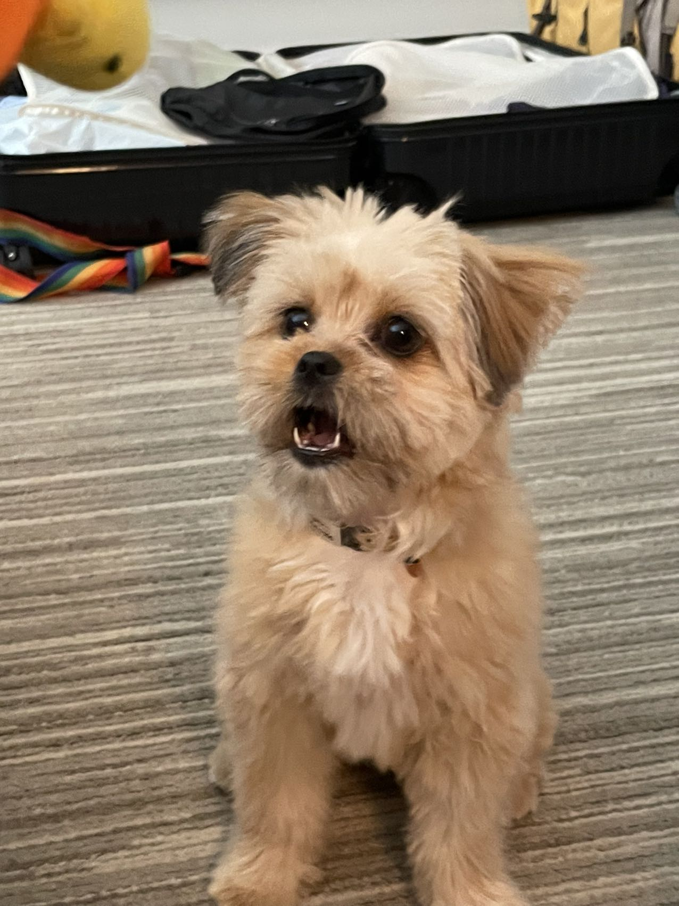
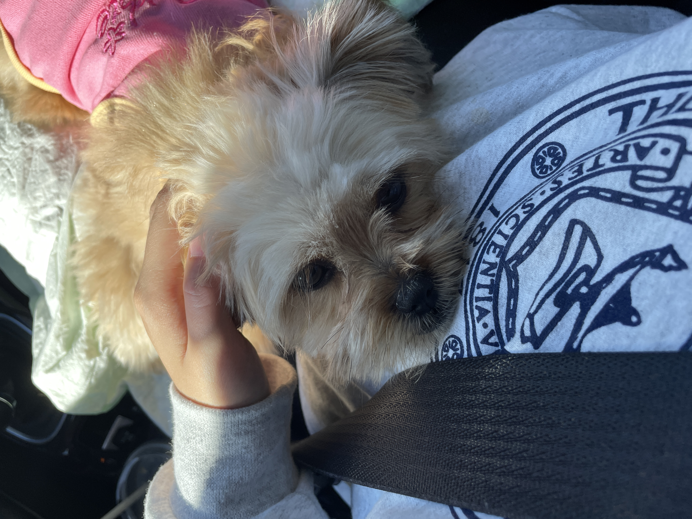
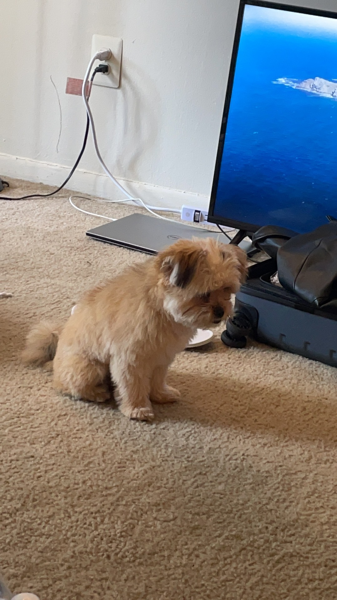
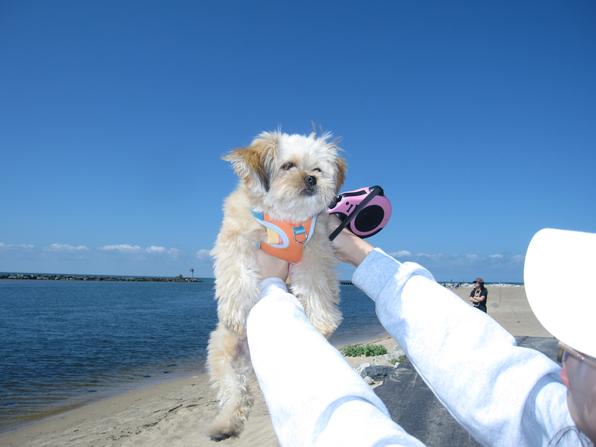
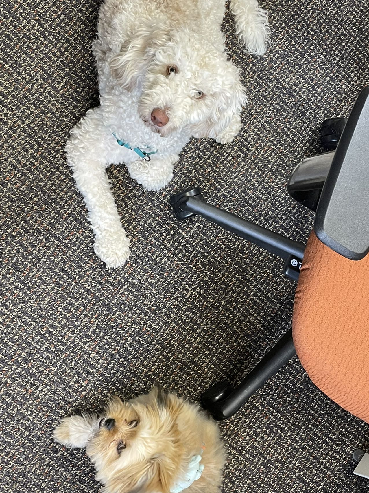
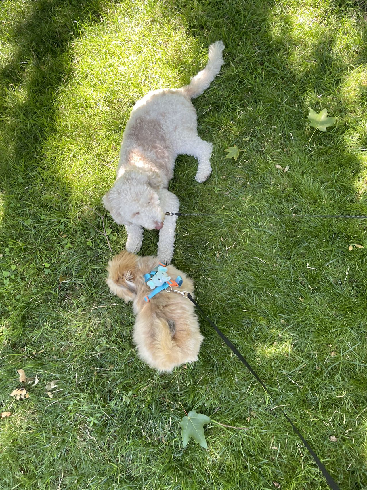

Bacon Q Dog

Bacon Q. Dog is a 9yr old labradoodle. He prefers to spend his days lounging among the three different beds/couches that his family has gifted him. He enjoys a walk or two around the neighborhood, as long as he can pretend that he doesn't see any of the other animals to avoid the embarrassment of not wanting to admit he has no wolf-like skills in chasing them.
At night just as the rest of the family is ready to relax, Bacon suddenly wants to release all of his energy. He will place his toys on a mini couch and frantically drag the couch around, giving his toys "a ride." There is also a lot of rolling. Lots and lots of rolling.
Photo Gallery


Likes
- Belly rubs
- Playing tug-of-war
- Sneaking onto the couch
Fitz Dog

Fitz loves chasings tennis balls, chipmunks, squirrels, and birds. Often found sitting by the fire in wintertime, and in sun patches when available. He’s energetic, mischievous, and easily bored. He loves people and gets grumpy if left without a lap too long.
He also loves barking up trees, running around on the lawn, and digging in the dirt looking for moles. He especially likes getting treats and whines when he comes inside and doesn’t get a snack.
Photo Gallery


Likes
- Blankets
- Being warm
- Barking
- Kay Malan
Cody Dog

Cody is a 7yr old Pembroke Corgi. He was born in Cavalier Farms, Seattle. He prefers to spend his days lounging on the bean bag. Every day, he enjoys two walks around the neighborhood and likes to make friends with other doggie friends. If lucky enough, he might see the cyclist, but he is not allowed to give chase.
Cody loves traveling. He enjoys walking on the beach and taking sun naps. But he hates cold weather. He would like to stay at home lounging by the fireplace in winter.
Photo Gallery


Likes
- Traveling
- Lounging
- Tennis balls
Juno Dog

No one knows exactly what breed Juno is, but that makes him all the more special. He was adopted before he was one year old; despite this and his German shepherd-esque looks, he stayed close to the same size, hovering around 50 lbs into adulthood. At the weathered age of ten years old, Juno is dealing with hip problems, but manages to stay in good spirits.
One of Juno’s favorite pastimes is finding the dirtiest puddle within a one-mile radius and making sure every inch of him makes contact with said puddle. If rolling around in dirt was an Olympic sport, Juno would have been the one that facilitated its inclusion into the Olympics.
Photo Gallery


Likes
- Human food
- Head pats
- Sleeping
- Artem Saakov
Sage Dog

Sage is a 3 year old Golden Retriever. She is one of the laziest dogs. She loves sneaking into the bedroom and hopping onto the neatest bed. She also loves riding in a car with the windows open feeling the wind and air. She enjoys walking, only if you take her for a ride to a big arboretum or park. Walking around the neighborhood is not necessarily her cup of tea.
Her favorite food is corn. One day, she stole corn on the cob from the dining table, which was surprising because she is normally gentle and polite. She took the stolen corn to the patio and enjoyed her meal by herself. Unfortunately, the corn turned out to be unripe, so she ended up vomiting it all later.
Photo Gallery


Likes
- Carrot
- Nap
- Big park
- Justin Lee
Pixie Dog
Pixie is a mixed-breed dog with Pomeranian lineage. She has a cute face that resembles a Yorkshire Terrier and the fiery temperament of a Pomeranian. She barks at unfamiliar dogs, but is very friendly towards humans.
Pixie has a captivating singing voice, and every morning at six o'clock, she begins her soprano singing, waking her owner up. At the same time, she is a good dog that isn't picky about food, but she is a bit greedy, always wanting whatever her owner is eating.
Photo Gallery
   Likes
- Singing
- Chocolate (she can't eat)
- Freud
Freud Dog
Freud has an owner with a PhD in psychology, which might be why she has such a stable and friendly demeanor, and she also appears very intelligent. She is Pixie's only friend, but Freud has many other good friends; it's just that Pixie doesn't know about them.
Freud always patiently plays with Pixie, but she also enjoys spending time with the young Golden Retriever in the neighborhood and has crushes on several other dogs. If she were human, her emotional stability would make her well-suited for pursuing a PhD. However, she's timid and can easily be frightened by plastic bags or newspapers drifting by on the street.
Photo Gallery
 Likes
- Biting wooden sticks
- Dating other dogs
- Learning